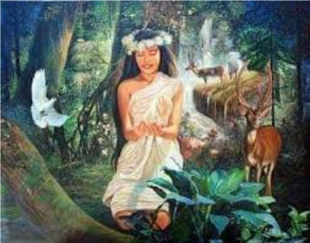

Nilalaman ng mga mito at alamat, mga iyos, at iba pang ninuno at
espiritu sa tradisyonal na mithos ng mga Kapampangan
Mangechay
Ilustrasyon mula sa pahinang @Lahi_PH, 2019
Mga Mito at Alamat
Mito ng Pagbuo ng Mundo
Mito ng Kapampangan kung paano nabuo ang mundo mula sa mga malalaking bato na ginamit sa labanan ng
mga diyos para sa kamay ng anak na babae ni Mangechay, ang kataas-taasang Diyos.
Pinagmulan ng Araw at Buwan
Ilustrasyon ni Evie Medoff
Pinagmulan ng Araw at Buwan
Alamat tungkol sa dalawang anak ng tagalikhang Bathala, si Apolaki at Mayari na nagbigay liwanag
sa mundo gamit ang kanilang mga mata. Matapos ang pagkamatay ni Bathala, nag-away ang magkapatid
kung sino ang mamamahala sa mundo at humantong sa pagkabulag ni Mayari sa isang mata. Nakaramdam
ng pagsisisi si Apolaki at iminungkahi na sila’y parehong mamuno sa kaharian. Si Apolaki ay naging
ang Araw na namumuno gamit ang liwanag at si Mayari ang naging buwan na namumuno gamit ang banayad
na liwanag.

Ang Alamat ng Bundok Arayat
Ilustrasyon mula sa pahinang Ang Nakaraan, 2021
Alamat ng Bundok Arayat
Ang Bundok Arayat ay dating malapit sa Candaba hanggang sa isang malakas na higante, Kargen Kargon,
ang inilipat ito sa bayan ng Arayat. Ang paglipat na ito ay nagdulot ng alitan sa mga higante ng
bulubundukin ng Zambales Ang alitan ay nagresulta sa hitsura ng mga bundok sa Zambales at patag na
tuktok ng Bundok Arayat. Matapos ang pagkamatay ng higante, nanirahan ang isang engkanto, si Sinukuan,
sa tuktok ng bundok kasama ang kanyang mga anak na babae.
Mga diyos
Mangetchay - Tagalikha ng Langit
Suku - higanteng unang naninirahan sa Pampanga at na
sumasalamin sa magagandang katangian tulad ng pagkahari, karunungan, katapatan, kakayahan at pag-ibig.
Makiling - Diyos na pinakasalan ni Suku
Malagu - Diyos ng Kagandahan na nagpakasal sa isang mortal;
anak nina Makiling at Suku
Mahinhin - Diyos ng Kahinhinan na nagpakasal sa isang mortal;
anak nina Makiling
Matimtiman - Diyos ng Alindog na nagpakasal sa isang mortal;
anak nina Makiling at Suku
Haring Sinukuan - Diyos ng Digmaan at Kamatayan na nakatira
at namamahala sa Bundok Arayat kasama ang diyos na si Mingan; itinuro sa mga naunang naninirahan
ang industriya ng metalurhiya, pagputol ng kahoy, kultura ng palay at maging ang pakikipagdigma
Mingan - Diyos na namumuno kasama si Sinukuan sa Arayat;
tinatawag ding Kalaya at Alaya
Apolaki - Diyos ng Araw
Mayari - Diyos ng Buwan
Apong Malyari - Diyos ng Buwan na nakatira sa Mt. Pinatubo
at tagapamahala ng walong ilog
Munag Sumala - gintong serpent child ni Haring Sinukuan;
sinisimbolo ang bukang-liwayway
Lakandanup - Diyos ng Gutom at anak ni Haring Sinukuan;
sinisimbolo ang araw sa oras ng tanghali
Gatpanapun - Maharlikang anak ni Haring Sinukuan; kumakatawan
sa hapon
Sisilim - Anak ni Apûng Malyari; kinakatawan ang dapit-hapon
at sinasalubong siya ng mga awit ng cicada sa kanyang pagdating
Naga - Serpent deities na kilala sa kanilang likas na
pagigin protektibo; ang kanilang presensya sa mga istruktura ay itinuturing na anting-anting laban sa apoy
Lakandanup - Serpent goddess na dumarating sa panahon ng total
eclipse; kumakain ng anino ng isang tao, na magreresulta sa pagkalanta at kamatayan; anak nina Aring
Sinukuan at Dápu
Apung Iru - Diyos ng Ilog; napakalaking kosmikong buwaya
na sinusuporta ang lupa ng mundo sa likod nito, at matatagpuan sa ilalim ng dakilang Ilog ng Mundo.
Kung nagalit, si Apung Iru ang naging dahilan ng pagbaha ng mga ilog
Iba Pang Nunu at Espiritu
Lawu - higanteng nilalang na kahawig ng pinaghalong ahas, ibon,
at buwaya na may nakakatakot na mga kuko at pangil. Nilulunok ang araw o buwan, na nagiging sanhi
ng mga eklipse.
Lakandanup - Diyos ng Gutom na inilalarawan bilang isang ahas.
Kung kinain niya ang anino ng isa, ito ay magreresulta sa pagkalanta at kamatayan. Anak nina apung
Sinukuan at Dapu.
Batala - Kingfisher deity; kilala bilang Ama na Langit at
bilang Salaksak; siya ay nilamon ni Dápu, kung saan siya ay natunaw at ang kanyang dalawang kaluluwa
(Aldo at Bulan) ay lumabas at sumabog mula sa tiyan ni Dápu
Dapu - Nunu o diyosa ng lupa, na kadalasang inilalarawan bilang
isang buwaya na nakahawak sa lupa sa kanyang likod. Inang karagatan at katapat ni Batálâ, ama langit.
Pugot Mamu - Espiritu ng paring walang ulo na sinasabing
nananakot sa mga tao at kumakain ng mga bata